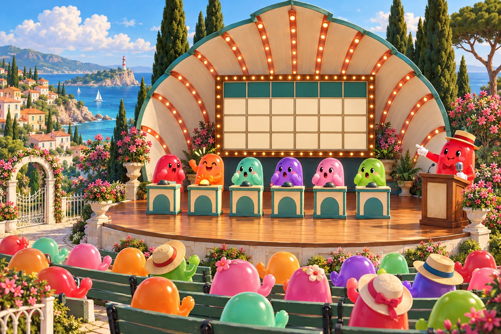
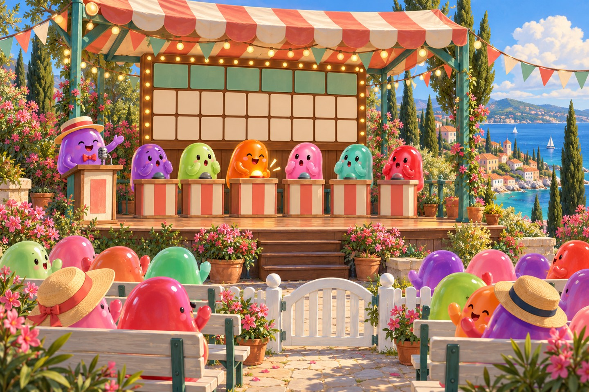
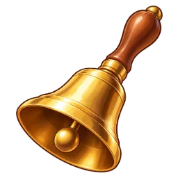
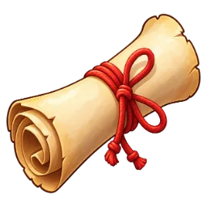
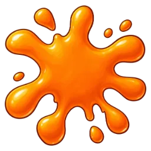
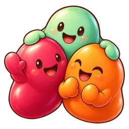
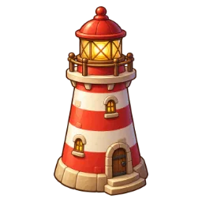

Ракушка
Квизы и игры с ведущим прямо на набережной: «Своя игра», «Загадка», «Крокодил» и «Кто из нас?»
Летняя эстрада в Приморском саду, за Курзалом: сцена, шесть пультов с лампами, трибуна ведущего, большое табло и скамейки для зрителей. Зашёл за ограду — здесь свой голос и строка чата «В игру». Нет желающих вести — ведёт житель Затейник. Всё ниже — живые макеты на настоящем интерфейсе игры: нажимай, отвечай, ставь лайки, рисуй.

«Своя игра»Табло тем и цен, кнопка «кто первый», ведущий ставит ✓ или ✗. Паки с выбором тем, свои паки.2–6 игроков + ведущий · 20–35 мин
«Загадка»Загадай что угодно — остальные угадывают в чате, ты ставишь 👍 или 👎, пока не дойдут до ответа.от 2 человек · раунд до 5 мин
«Крокодил»Рисуешь слово на мольберте сцены, все угадывают в чате, сервер сам ловит верный ответ.от 3 человек · раунд 80 с
«Кто из нас?»Вопрос про своих, тайное голосование, лидер получает титул над ником.3–12 человек · 10 раундов
Пак «Набережная»Вопросы про саму игру: рыбы по силуэту, мобы крепости, жители, места. Плюс слова «Крокодила» и вопросы «Кто из нас?».Предложение — нужно твоё «да»Где это
Приморский сад — пустая новая земля за Курзалом. «Ракушка» стоит спиной к морю, раскрытием к кафе «Чайка»: табло видно из прохода между Курзалом и Смотровой. Внутри ограды — свой голос: на сцене слышат друг друга, набережная — нет.
«Своя игра»
Как в передаче: табло тем и цен, кнопка «кто первый», ведущий судит. Ведёт игрок за трибуной, а если желающих нет — Затейник.
- Ведущий выбирает пак и темы, игроки встают за пульты — от двух до шести.
- Игрок с ходом выбирает клетку. Кнопки открываются, когда вопрос прочитан; кто первым нажал Пробел — отвечает голосом или текстом.
- Ведущий ставит ✓ или ✗ — цена в плюс или в минус. Нет ведущего — ответ сверяет Затейник, спорный можно оспорить.
«Загадка»
Твоя идея: один загадывает что угодно, остальные угадывают в чате, он ставит лайк или дизлайк — и так доходят до ответа.
- Загадай что угодно и выбери категорию — само слово видишь только ты.
- Остальные пишут догадки в строку «В игру», а ты ставишь 👍 тепло, 👎 мимо или 🎯 угадал.
- Лайкнутые догадки встают на табло цепочкой — по ней и доходят до ответа. Угадавший загадывает следующим.
«Крокодил»
Рисунок сразу появляется на большом мольберте сцены — его видно даже с прохода у кафе.
- Выбери одно из трёх слов и рисуй 80 секунд: восемь цветов, три кисти, ластик.
- Остальные угадывают в чате; сервер сам ловит верный ответ и лично шепчет «почти».
- Чем раньше угадал — тем больше очков; рисующему — за каждого угадавшего.
«Кто из нас?»
Лёгкая игра для своих: вопросы про компанию, тайное голосование и смешные титулы.
- Вопрос про своих: «Кто из нас первым уснёт на рыбалке?» — можно добавить и свои.
- Все тайно голосуют за кого-то из участников, за себя нельзя.
- Лидер получает титул над ником до конца игры, а угадавшие мнение большинства — очко.
Паки вопросов
Паки SIGame (.siq) — в сообществе их тысячи — и свой простой формат: хоть руками, хоть из Google Таблиц. Брось сюда настоящий .siq — страница разберёт его прямо в браузере, как будет в игре.
Чат «В игру» и Затейник
Внутри ограды строка чата переключается: «В игру» — только игре, «Всем» — как раньше. Общий чат не засыпает догадками.
Награды и план
Жетоны и рекорды считает сервер. Делаем по этапам — каждый смотришь отдельно на своём адресе.
Жетоны
| За что | Сколько |
|---|---|
| Минута активной игры: нажал, отвечал, угадывал, голосовал, рисовал или вёл | 8 🪙 |
| «Своя игра»: 1-е / 2-е / 3-е место (если игроков от трёх) | +100 / +50 / +25 |
| Ведущий доиграл игру до конца | +50 |
| «Загадка»: разгадал / твою разгадали | +15 / +10 |
| «Крокодил»: места в итоге | +60 / +30 / +15 |
| «Кто из нас?»: самый «в теме» | +40 |
| Викторина в общем чате: первый верный ответ | +10, до 50 в день |
Меньше трёх людей в игре — без жетонов. Потолок квизов — 400 🪙 в день.
Рекорды и где видно
- Профиль: победы и лучший счёт в «Своей игре», угадано в «Крокодиле» и «Загадке», титулы «Кто из нас?».
- Набережная: строка «Ракушки» на афише кафе, вывеска над аркой с живым статусом, табло видно с прохода.
- Общий чат: начало игры, победа, разгаданная загадка — не чаще раза в 2 минуты.
- Итоги: общее окно итогов режимов — места, счёт, жетоны, «Ещё раз».
Этапы
| Этап | Что войдёт | Как проверим |
|---|---|---|
| 1. «Ракушка» и «Загадка» | Планировка из простых объёмов на настоящем месте, ограда, места и роли, свой голос, строка «В игру», «Загадка» целиком, жетоны | Втроём: голос только внутри, цепочка «тепло» видна с прохода, 🎯 — праздник |
| 2. «Своя игра» и паки | Свой формат, загрузка .siq, каталог, живой ведущий и Затейник, финал, итоги, рекорды | Ведущий + трое за пультами + зритель, честная кнопка при разном пинге |
| 3. «Крокодил» и «Кто из нас?» | Холст с мазками у всех и на мольберте, слова; голосование и титулы | Четверо: рисунок у всех без задержки, «почти» видит только автор |
| 4. Модели и звук | Ракушка, пульты, мольберт, Затейник с анимациями; звуки; викторина в чате (если «да») | Замер бюджета, приёмка «как игрок», общий релиз |
Бюджет: у «Ракушки» не больше +10 отрисовок и без новых программ (их уже 79 из 80), табло — один холст. Всё новое — за флагом сервера QUIZ.
Что нужно решить
- Вид эстрады: «Ракушка» или «Шатёр»? (переключатель в шапке)
- С чего начать: с «Загадки» — быстрее, и на ней проверим площадку, голос и чат — или сразу со «Своей игры»?
- Викторина в общем чате: делаем? Раз в 25 минут — нормально?
- Пак «Набережная» со своими вопросами про игру — делаем?
- Жетоны: так, меньше или больше?
- Загрузка паков с 3-го уровня (защита от мусора) — оставить или пускать всех?
Страница-обзор не входит в игру. Решения и правила — docs/quiz/brief.md. Картинки — Codex image_gen, промпты — img/PROVENANCE.md.